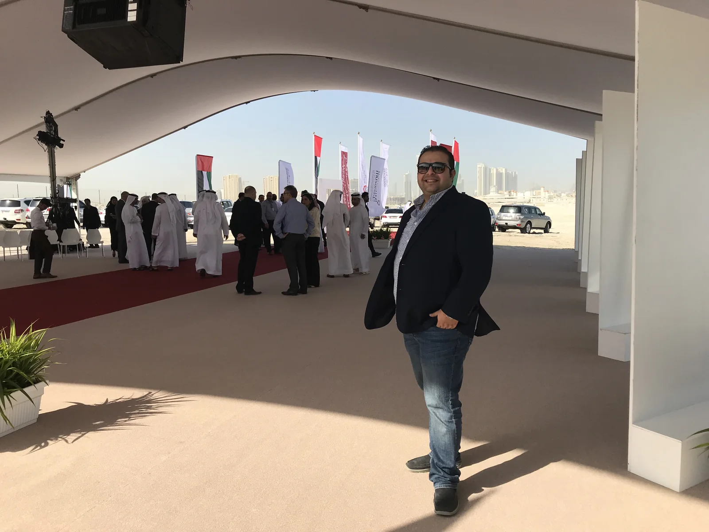
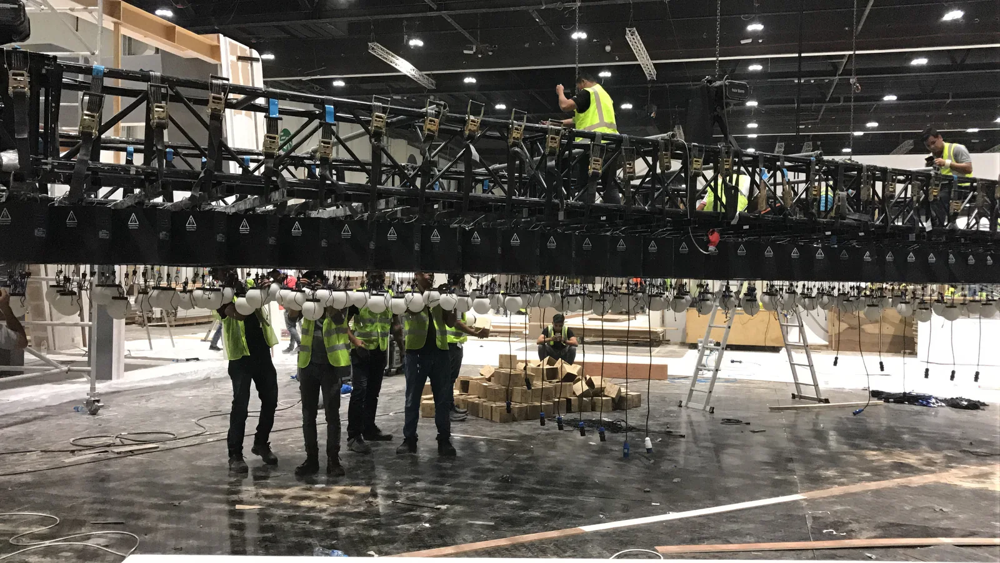
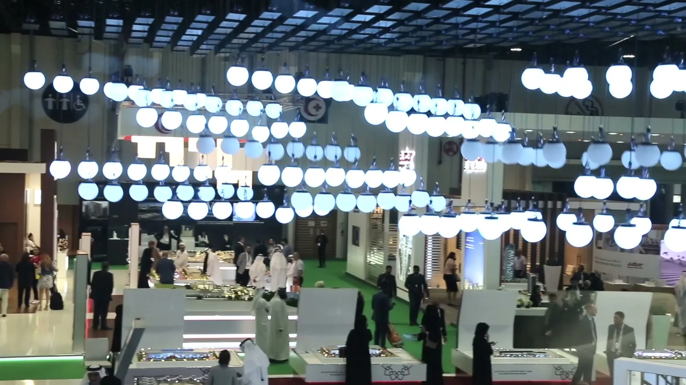
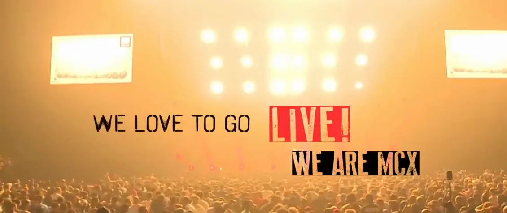

Brand strategy, identity, toolkit and campaigns for a New York association serving schools internationally. Led from Dubai, 2020–2022.
About
Hello, I’m
Tony.
Antoni Gerges
Creative Director, Brand & Experiential

Creative direction, with the whole assignment in view.
My approach combines a five-year degree in Graphic Design with 23 years of creative practice across Cairo, Dubai and Abu Dhabi.
Dubai’s mix of cultures shaped how I communicate across audiences; leading identities, campaigns and live experiences brought responsibility for creative direction, clients, production and budgets. Now based in Tampa, I keep sharpening my craft with current tools, bringing creative depth and an understanding of the whole assignment to the teams I join.
See how we develop the work
Five years in Fine Arts.
I spent five years at Minia University’s Faculty of Fine Arts in Egypt, earning a bachelor’s degree in Graphic Design. Painting, sculpture and animation were part of the creative life around me, with interior design and architecture departments alongside us.
Those years shaped how I look, listen and notice what something feels like, and that attention to image, movement, material and space still guides the way I work across brand identities, campaigns and live experiences.
Background & leadershipClose

From Cairo, to Dubai, to Tampa.
My working life began in Cairo in 2003; Dubai followed in 2006. Across Dubai and Abu Dhabi, the work grew from identities and campaigns into exhibitions, product launches and festivals. The team and I developed the Dubai Health Authority identity and its launch campaign; at Liwa, we brought desert sport into the festival’s identity and campaign. Each project meant working closely with clients, designers and production partners, making decisions together and keeping the creative direction clear.
Now based in Tampa, I continue to sharpen my creative tools across design, storytelling and production. 3D, motion and AI are part of that wider toolkit.
I remain closely connected to the creative communities in Cairo and Dubai, through years of work with teams, clients and collaborators.
- Title
- Creative Director, Brand & Experiential
- Practice
- Creative direction · Art direction · Brand identity · Campaigns · Live experiences
- Team leadership
- Led an agency team of up to 15 across creative, design, 3D, marketing, account management and accounts.
- Cities
- Dubai · Abu Dhabi · Cairo · Tampa
- Education
- Bachelor’s in Graphic Design · Five-year program · Faculty of Fine Arts, Minia University, Egypt · 2003
- Recognition
- Dubai Culture & Arts Authority accreditation, Creators 2022, which led to the 10-year UAE Golden Visa · appointed by direct order by the Department of Municipal Affairs, Abu Dhabi, “for the best technical offers” (Cityscape 2017)
- Works in
- English and Arabic
- Tools
- Claude, ChatGPT and Codex, Gemini, Google Flow, Midjourney · Illustrator, Photoshop, InDesign · Google Workspace, GoHighLevel
- Base
- Tampa, Florida
- Making
- Hands-on design, 3D and motion; AI used as a production tool.
- MCX
- Partner, Creative Director & Co-producer, through AntBrush · 2017–2022
- My system, four Cs
- Creative · Connect · Code · CRM. A system for connecting the creative idea, communication, digital tools and client relationships. For a client, it means one idea carried through brand, launch, exhibition, film and digital, to delivery.
- What a partner gets
Delivery owned end to end, from the first drawing to the built thing.
A co-production model, proven with MCX: concerts, galas, festivals.
A network across Dubai, Abu Dhabi, Cairo and Tampa.
How I work
Idea to delivery, at any scale.
Find the one idea.
Understand the brief and the audience.Read moreCloseUnderstand the brief, the audience and what matters to the client. Find the thought that gives the work its direction.
Dubai Health Authority · Identity · 2008. The mark in five steps, as we set it out in the brand manual. The name completes the open corner. ZEISS Vision Care · Launch · Dubai · 2022 · with MCX. A lens, the ZEISS brackets and an eye: one picture. The launch grew from this sheet. Draw many. Choose one.
Explore the routes together.Dubai Health AuthorityA star with one corner open. Almost 1,000 staff voted for it.

Drawn 
Built  The mark, in 3D · 0:21Liwa
The mark, in 3D · 0:21LiwaA festival on open sand, built from nothing. Six zones, 16 days.

Drawn 
Built  The TV commercial · 1:01ZEISS
The TV commercial · 1:01ZEISSA lens, the brackets and an eye: one picture. Then 74 feet of screen.

Drawn 
Built  The launch film · 2:34Cityscape Abu Dhabi
The launch film · 2:34Cityscape Abu DhabiBoxes on a floor plan became one line. Built in three days.

Drawn 
Built  The show film · 2:38
The show film · 2:38Stay until it stands.
Carry the idea through delivery.Read moreCloseStay close as the work takes shape. The team and I carry the idea through the artwork, film, digital work and finished experience.

Original design

Rigging the ceiling

Pavilion in use
Cityscape · Abu Dhabi · 2017 · through AntBrush. The original spatial design, the crew rigging the sphere ceiling, and the pavilion in use, a frame from the show’s coverage. Then it is built. The fourth beat is the work itself.
Creative leadership, in practice
From the pitch to the final sign-off.
On assignments I’ve led, my responsibility has covered the pitch, account direction, client relationships, creative direction, production and budget. I’ve signed off the finished work and reported directly to clients, including government bodies and major brands.
The result depends on the people doing the work. Designers, account teams and production partners bring judgment I rely on. My role is to give clear direction, make the decisions that are mine and support the team’s contribution.
On any team, I bring the same care to my part, whether directing the creative work or preparing final artwork for production. I take responsibility for that contribution and how it affects the wider project.
Through AntBrush
Through AntBrush, I led creative teams and worked directly with clients across Dubai and Abu Dhabi. My role combined creative direction and hands-on design: developing the work with the team, presenting it to clients and guiding production partners as we carried it through to delivery.
MCX · Dubai · 2017 to 2022
With MCX
From 2017 to 2022, I was Partner, Creative Director & Co-producer at MCX, through AntBrush. With the team, we originated and produced shows including Amr Diab and Lilly Singh. For the commissioned ZEISS launch, I led creative direction through AntBrush, with MCX as co-producer.
For shows we co-owned and produced with MCX, we also carried the financial risk.

Play the film1:57Partner, Creative Director & Co-producer. MCX’s own promo film.
Project scope and deliveryClose
With MCX, the team produced live shows for Amr Diab, Angham, Mohamed Mounir, Magida El Roumi and Lilly Singh, and festivals and launches for Etisalat, Unilever, ZEISS and Publicis.
- Collectively managed
- $10M+ in delivered projects, accountable for the client and the result, from first brief to final delivery
- Pitches won
- Dubai Health Authority · Abu Dhabi Building Codes · Liwa International Festival
- Built from scratch
- Six festival zones in the desert · a 7,200 sq ft pavilion in three days · a launch live six days after confirmation
What I stand for
Ideas made real, earning their place in people’s lives.
Mission
Every brief holds someone’s trust. People who know their craft carry it together; every voice shapes the work. I answer for the result.
Values
- 01Ideas first
- 02Promises kept
- 03Craft respected
- 04Technology that serves
- 05Honest and open
- 06People first
In their words
In their words.
“This collaboration was made possible by the efforts of AntBrush Founder, Antoni Zaki, another one of our preferred partners.”
“…assigning AntBrush by direct order, for presenting the best technical offers.”
“Keep up with the good work.”
Education & public engagement
Ideas that connect
institutions and people.
Identity and campaign for the UAE Ministry of Education, across 10 cities. Original materials and films show what was delivered.
Al Ain, 2024. The original drawings, construction record and finished experience show the work from design to opening.
A school’s rebrand in New Port Richey, Florida: identity, design system, logo animation, collateral and enrollment forms. Volunteer work, 2026.
Where and for whom
Cairo. Dubai. Abu Dhabi. Tampa.
- 2003CairoGraphic designer
- 2006DubaiJunior art director
- 2007AntBrushFounded AntBrush; led identities, campaigns and experiences with creative teams and production partners.
- 2017MCXPartner, Creative Director & Co-producer, Dubai
- 2024Tampa, FloridaCreative direction, with new tools for making
Projects by locationClose
- DubaiDubai Health Authority, ZEISS, Why Not! Mazzika, the concerts, Capacity Middle East
- Abu DhabiCityscape, Al Forsan, The Big Grill
- Al AinInnovation Month
- Al DhafraLiwa International Festival
- Across the UAENational Bullying Prevention Week
- GizaMAF Global Solutions
- From Dubai, to schools worldwideAIAASC
- Clients
- Dubai Health Authority
- Department of Municipalities and Transport, Abu Dhabi
- UAE Ministry of Education
- UAE Ministry of Foreign Affairs and International Cooperation
- Abu Dhabi Sports Council
- Abu Dhabi Airports
- Abu Dhabi Media
- Dubai Land Department
- Emirates Post Group
- Khalifa Fund for Enterprise Development
- Abu Dhabi Urban Planning Council
- Department of Urban Planning and Municipalities, Abu Dhabi
- Department of Transport, Abu Dhabi
- Abu Dhabi City Municipality
- Al Ain City Municipality
- Al Dhafra Region Municipality
- Musanada
- Abu Dhabi Projects and Infrastructure Centre
- Shurooq, Sharjah Investment and Development Authority
- Emirates Center for Strategic Studies and Research
- Abu Dhabi Education Council
- Abu Dhabi Food Control Authority
- Telecommunications Regulatory Authority
- Abu Dhabi Chamber of Commerce and Industry
- Abu Dhabi Centre for Technical and Vocational Education and Training (ACTVET)
- ASUS
- ABB
- JVC
- Emaar Misr
- Ducab
- Dubai Airport Freezone
- Elm
- Tawazun
- Arabsat
- Nas Air
- RAK Porcelain
- DOKA
- Liberty Automobiles (Cadillac and Chevrolet)
- Bin Jabr Group
- Al Hamra Group
- ADCOM Systems
- Emdad
- Suwaidi Engineering Group
- United Broadcast
- PAKSAT
- iMCC Group
- Ceramica Omega
- Ceramica Verdi
- Pal Middle East
- Mazroui Engineering
- NAS (Naval Advanced Solutions)
- Dar Designs
- Venues
- Coca-Cola Arena · Why Not! Mazzika, 2019
- Armani Hotel Dubai, Burj Khalifa · Capacity Middle East gala, 2018
- Atlantis The Palm, Nasimi Beach · Capacity Middle East gala, 2019
- Dubai Media City Amphitheatre · Amr Diab, Mohamed Mounir, Magida El Roumi, 2017–18
- Dubai World Trade Centre · Angham, 2017; Gulf Traffic, 2018; GITEX
- Emirates Golf Club · Hakawi Sharqia, The Big Grill, 2017
- JW Marriott Marquis Dubai · DMT, 2023
- The Space, Dubai · ZEISS launch, 2022
- City Centre Mirdif and City Centre Deira · MAF, 2018
- ADNEC · World Future Energy Summit 2011–15, Cityscape Abu Dhabi, National Housing Exhibition, Tawdheef, IDEX, ADIPEC, ISNR
- Abu Dhabi Global Market · ADPIC introductory seminar, 2024
- Rosewood Abu Dhabi · Future Leaders Programme, 2022
- Yas Links, Yas Island · The Big Grill, 2018
- Yas Island · Balqees, 2018
- Umm Lafina Bridge · ground-breaking 2017, opening 2022
- Moreeb Dune, Liwa · Liwa International Festival, 2020
- Al Ain · Innovation Month 2024, Union Day, Sheikh Zayed Year book launch, Ramadan Nights
- Al Dhafra Region · DMT townhall and National Day
- Expo Centre Sharjah · Sharjah International Book Fair
- Marriott Mena House, Giza, at the Pyramids · MAF, 2021
- Istanbul · Unilever, 2018
GITEX Technology Week · GITEX Shopper · ADIPEC · IDEX · ISNR · Cityscape Abu Dhabi · Cityscape Dubai · World Future Energy Summit · Arabian Travel Market · CABSAT · Gulfood · Middle East Electricity · The Big 5 · Dubai Airshow · NAVDEX · ADIHEX · Najah · Tawdheef · Careers UAE · Hotel Show · Abu Dhabi Book Fair · Sharjah International Book Fair · Gulf Traffic · National Housing Exhibition · Gastech (London) · Metal (Jeddah) · BATIMAT (Paris)